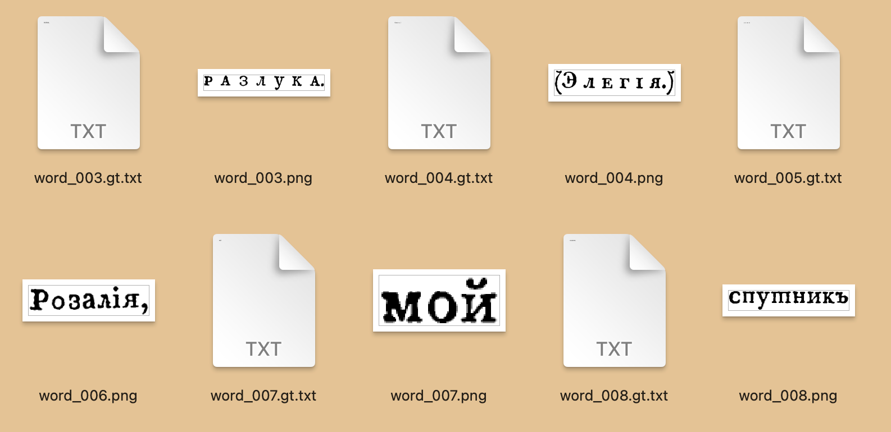

library(qpdf)
library(tesseract)
library(pdftools)
# install.packages("remotes")
# remotes::install_github("arcruz0/tesseractgt")
library(tesseractgt)3 Распознавание изображений
В этом уроке мы освоим основной инструмент для распознавания печатного текста в R – пакет tesseract, а также научимся дообучать модели под конкретные задачи и шрифты. Для работы нам понадобятся следующие библиотеки:
3.1 Что такое OCR и tesseract
OCR (Optical Character Recognition) — это технология автоматического распознавания печатного текста на изображениях и преобразования его в машинно-читаемый формат. Эта технология позволяет “извлекать” текст из сканированных документов, фотографий, PDF-файлов и других графических форматов.
Tesseract — это одна из самых популярных библиотек OCR с открытым исходным кодом, разработанная компанией Google. Tesseract поддерживает более 100 языков и может работать с различными типами изображений и форматами документов. Это совершенно бесплатно. Последние версии Tesseract используют обучение при помощи нейросетей (LSTM), и их можно дообучать под свои задачи, что очень удобно и не требует больших мощностей и продвинутых навыков программирования.
Пакет tesseract в R представляет собой обертку для библиотеки Tesseract, которая позволяет:
- Распознавать текст с изображений различных форматов (PNG, JPEG, TIFF, PDF);
- Работать с многостраничными документами;
- Использовать предобученные модели для разных языков (список);
- Настраивать параметры распознавания под конкретные задачи;
- Дообучать модели для улучшения качества распознавания специфических шрифтов или типов документов.
В отличие от онлайн-сервисов OCR, пакет tesseract работает локально, что обеспечивает:
- Конфиденциальность — данные не передаются третьим лицам;
- Скорость — нет задержек на передачу данных по сети;
- Настраиваемость — возможность тонкой настройки под конкретные задачи;
- Бесшовную интеграцию с экосистемой R для дальнейшего анализа данных.
Однако качество распознавания сильно зависит от качества исходного изображения, типа шрифта, языка документа и правильности настройки параметров. Именно поэтому важно уметь не только использовать готовые модели, но и дообучать их под специфические задачи.
3.2 Данные
В качестве упражнения мы возьмем ч. 6 № 6 журнала “Невский зритель” за 1821 г. (источник). Чтобы не запутаться в выпусках, заберите нужный номер из репозитория курса и сохраните его на компьютер.
Журнал «Невский зритель» издавался в Петербурге ежемесячно с января 1820 г. по июнь 1821 г. Всего вышло 18 книжек журнала, составивших 6 частей. Все они доступны на сайте “Пушкинского дома”.
Официальным издателем журнала был выпускник Московского университета Иван Матвеевич Сниткин (род. ок. 1792 г.). С января по апрель 1820 г. соиздателем «Невского зрителя» был В. К. Кюхельбекер; намеревался войти в число издателей и К. Ф. Рылеев (1797-1826), активный сотрудник журнала с октября 1820-го по февраль 1821 г. В разное время в журнале печатались произведения Пушкина, Кюхельбекера, Жуковского, Баратынского, Дельвига, а также Рылеева, поместившего в октябрьской книжке 1820 г. острейшую сатиру на Аракчеева «К временщику». (Источник.)
3.3 Выбор страниц
Для начала вырежем несколько страниц из pdf. Таким образом вы легко можете делить любые издания на главы, разделы и т.д. Сначала сохраняем путь к файлу в виде строки (у меня он лежит в папке ocr, но у вас путь может быть иной).
my_files <- list.files("../ocr", pattern = "pdf", full.names = TRUE)
my_files[2] # нужный файл[1] "../ocr/НЗ1821_6_6[50-51].pdf"Теперь вырежем из журнала две страницы. В input отдаем путь к файлу (как он выглядит на вашем компьютере); в output – любой путь (или только имя и расширение) для нового файла (можете придумать свое); аргументу pages передайте номера страниц.
pdf_subset(input = my_files[2],
output = "../ocr/НЗ1821_6_6[50-51].pdf",
pages = 50:51)После этого у вас на компьютере должен появиться pdf вот такого элегического содержания.


Ответ: .
3.4 Извлечение текста из pdf
Если вам повезло, то pdf хранит уже распознанный текст. Такое бывает довольно часто (хотя иногда распознавание настолько плохое, что проще сделать вид, что его нет, и распознать заново). Проверим.
text1 <- pdf_text(pdf = "../ocr/НЗ1821_6_6[50-51].pdf")
# как print(), но больше подходит для вывода текста (можете сравнить)
cat(text1)ЭЭСЮЭЭЭЭЭСКЮЭЭЭЭЭСЮС»ЭЭЭ<Э<ЗС>Э(ІЭ(99ЭС933 э о э з о з э з э
РАЗЛУКА.
( Э л е г і я ,)
Розалія, мой спутникъ неизмѣнный
На полѣ радостей земныхъ!
Розалія, мой другъ, хранитель несравненный!
Когда я отдохну въ объятіяхъ твоихъ? . •.
Съ тобою горестей душа моя незнаетъ,
И сердцу скорбному не измѣнитъ покой!
Надежда мрачный путь звѣздою озаряетъ,
И я мирюсь съ враждебною судьбой! . . •
Теперь, за дальними, свирѣпыми морями
Твой сладкій гласъ не оживитъ меня!
Взойдетъ заря надъ злачными холмами,
Появится въ лучахъ свѣтило дня —
Напрасно! все кругомъ покрыто мглою.
Неслышится мнѣ сладкій ігівой привѣтъ.
Всѣ радости, надежды всѣ съ тобою —
И опустѣлъ безъ милой свѣтъ!
Подруга милая, скажи, что край прелестный,
Что мирныя, тѣнисты я поля,
Что своенравныя судьбы привѣтъ мнѣ лестный,
Когда съ тобой въ разлукѣ я.
Но другъ мои! горесть отл етаетъ
243
На быстрыхъ времени крылахъ,
И радость сердце посѣщ аетъ. . . .
Моя надежда — въ небесахъ!. . .
Когдажъ опять смягченными судьбами
Я въ радости къ подругѣ понесусь,
Коснусь волшебныхъ струнъ волшебными пер
стами
И, съ рѣзвою мечтою примирюсь.
А, Б — фЪ.Текст распознан достаточно хорошо, есть мелкие ошибки, но их можно исправить (о чем речь пойдет в следующем уроке). Если необходимо сохранить извлеченный из pdf текст для дальнейшей работы, это делается так:
# укажите свой путь или одно только имя
writeLines(text1, con = "../ocr/rosalia_1.txt")Прежде чем двигаться дальше, убедитесь, что тест сохранился.
3.5 Распознавание
Если текст не распознан (притворимся, что так и есть), то можно попробовать распознать при помощи tesseract. Однако есть нюанс: tesseract не знает дореформенного русского. Это значит, что все яти (ѣ), еры (ъ), фиты (Ѳ) и десятеричные и (і) превратятся во что-то странное. А еще трудности бывают с буквой “т”, т.к. в XVIII и XIX в. ее иногда печатали по-другому.
Чтобы использовать предобученную модель, ее надо скачать при помощи функции tesseract_download(). Это делается один раз (поэтому у меня эта строчка закомментирована). Кстати, тессеракт способен “читать” тексты на нескольких языках, для этого передаем значение аргументу language так: "rus+deu". Важно правильно указать код; если не уверены, еще раз загляните в список моделей. После этого выведите список моделей.
# tesseract_download("rus")
tesseract_info()$availableМодель скачана, мы можем использовать ее для распознавания. Но на многое не рассчитываем, ведь это модель для современного русского, со старой орфографией она не знакома.
Функция pdf_ocr_text() из пакета {pdftools} преобразует наш pdf в серию картинок и обращается к пакету {tesseract} для распознавания.
text2 <- pdf_ocr_text("../ocr/НЗ1821_6_6[50-51].pdf",
language = "rus")
cat(text2)
# Converting page 1 to НЗ1821_6_6[50-51]_1.png... done!
# Converting page 2 to НЗ1821_6_6[50-51]_2.png... done!
# 999939993993999999339993399999939939 9039303939
# РАЗЛУКА.
# (Элегтя.)
# ————-
# Розамя, мой спушникъь неизмённый
# На полЪ радосшей земныхь!
# Розал!я, мой другь, хранишель несравненный!
# Когда я ошдохну въ объяпияхь швоихъ?...
# Съ шобою горестей душа моя незнаеть,
# И сердцу скорбному не измЪнить покой!
# Надежда мрачный пушь звЪздою озаряепть,
# И я мирюсь съ враждебною судьбой!...
# ’Геперь, за дальними, свиофпыми морями
# Твой сладк!й гласъ не оживишьъ меня!
# Взойдеть заря надъ злачными холмами,
# Появишся въ лучахъ свЪшило дня —
# Напрасно! все кругомъ покрыпю мглою.
# Неслышишся мнЪ сладюй тивой привЪфить,
# ВсЪ5 радосши, надежды всЪ съ шобою —
# И опусш$ль безъ милой свЪзить’
# Подруга милая, скажи, чшо край прелесшный,
# Чпо мирвыя, тифвисптыя поля,
# Чтпо своенравныя судьбы привЪтьъ мн лесшный,
# Когда съ шобой въ разлук я.
# Но другь мой! горесмь ошленаепть
# 245
# На бысшрыхь времени крылахь,
# И радосшь сердце посфщаеть....
# Моя надежда — въ небесахь!...
# Когдажъ опяшь смягченными судьбами
# Я въ радосши къ подругЪ понесусь,
# Коснусь волшебныхь сшрунь волшебными пер-
# сшами
# И, сь рфзвою мечтшою примирюсь.
# Я, Б — $5.Сохраним text2 в отдельный файл для сравнения.
writeLines(text2, con = "../ocr/rosalia_2.txt")Как быть, если результат распознавания не устраивает?
Первое: проверить, нет ли обученных моделей, которые справятся с вашей задачей. Можно поискать, например, модели на Hugging Face. Но результат может будет зависеть от того, на каких шрифтах учили модель.
Второе: обученные модели можно также поискать в Транскрибусе (например, здесь и здесь). Но у Транскрибуса есть ряд ограничений: модели нельзя использовать локально, за расширенный функционал придется платить, и др. Бесплатно можно пользоваться готовыми приложениями.
Наконец, можно дообучить уже существующую модель
tesseract, как показано вот в этом примере. Этим мы сейчас и займемся.
3.6 Конвертация pdf
Функция pdf_ocr_text() “подметет” за собой все картинки. Чтобы преобразовать pdf изображения и сохранить их на компьютере (например, для внешнего приложения по распознаванию текста или для создания обучающих данных), используем другую функцию.
pdf_convert("../ocr/НЗ1821_6_6[50-51].pdf",
format = "png",
dpi = 300,
pages = NULL, # все страницы, или c(1,3,5) для конкретных
filenames = NULL)Запустите код и убедитесь, что в выбранной директории появились два файла с расширением .png. Они нам пригодятся чуть позже.
3.7 Файн-тюнинг
Начиная с версии 4, Tesseract использует нейронную сеть для распознавания текста, что позволяет дообучать модель для конкретных задач. Для дообучения необходимы эталонные данные — фрагменты изображений с соответствующим им текстом.
3.7.1 Подготовка изображений
Создайте папку с именем {язык}-ground-truth/ (например, orus-ground-truth/) и поместите туда изображения текста. Названия файлов могут быть любыми.
dir.create("orus-ground-truth/")Самый простой способ: сделать скриншоты вручную (чем больше, тем лучше). Вот пример:

Более продвинутый подход к нарезке изображений можно найти здесь (для Python). Мы нарежем изображение на отдельные слова в R. Для этого скачайте следующий скрипт и запустите его:
source("../helper_scripts/crop_words.R")В глобальном окружении появится функция crop_words(). Если хотите заглянуть внутрь, просто наберите View(crop_words). Но разбираться в начинке необязательно. Вы же не всегда интересуетесь, что там под капотом других функций? Просто эту вы взяли не из пакета, а из GitHub’а. А можете сами написать, сохранить себе, и так же использовать внутри других скриптов.
Функция crop_words() принимает на входе путь до изображения (обязательный аргумент), название директории, куда будут сохранены слова (по умолчанию words), язык базовой модели (код tesseract, по умолчанию rus) и отступ вокруг слова при обрезке (в пикселях). Аргумент overwrite управляет тем, очищать ли существующие файлы word_*.png в out_dir перед сохранением (по умолчанию FALSE).
Также функция проверяет наличие пакетов magick, tesseract, tidyverse; при отсутствии пытается установить их вместе с зависимостями и затем подключает. Для корректной работы OCR с выбранным языком в системе должны быть установлены языковые данные Tesseract. Функция сохранит в папку изображения, а также вернет таблицу с метаданными (ее присвоим переменной; это не обязательно делать).
words_data <- crop_words(image_path = "../ocr/НЗ1821_6_6[50-51]_1.png",
out_dir = "../ocr/words",
lang = "rus",
pad = 2L,
overwrite = TRUE)После этого в папке words должно появиться нечто похожее:
 Чтобы “разрезать” на слова несколько изображений, используем функции для итераций из пакета
Чтобы “разрезать” на слова несколько изображений, используем функции для итераций из пакета purrr (мы встречались с ними, когда читали сразу несколько текстовых файлов в окружение).
Сначала собираем все пути до файлов в символьный вектор.
img_paths <- list.files("../ocr", pattern = "png", full.names = TRUE)
img_paths[1] "../ocr/НЗ1821_6_6[50-51]_1.png" "../ocr/НЗ1821_6_6[50-51]_2.png"И запускаем итерации!
walk(img_paths, crop_words,
out_dir = "../ocr/orus-ground-truth")После запуска кода в папке должно появиться 157 файлов png. Все перепроверим, мы же тревожные.
list.files("../ocr/orus-ground-truth") |>
length()[1] 157Обратите внимание на то, что функция walk(), в отличие от map_chr() из того же пакета {purrr}, ничего не сохраняет в окружение. Мы используем ее для повторного запуска crop_words(), которая последовательно нарезает страницы на слова и “сбрасывает” изображения слов в указанную директорию. То же самое можно было бы сделать так:
crop_words(image_paths[1])
crop_words(image_paths[2])
# ...и так далее!Но, согласитесь, повторять это действие больше двух раз достаточно утомительно. Кроме того, у программистов считается плохим тоном “копипастить” один кусок кода более двух раз. Поэтому мы использовали функцию-итератор. Вжух.
3.7.2 Текстовые файлы
Теперь для каждого изображения добавим текст (файлы в формате .gt.txt). Для ускорения процесса создания эталонных файлов можно использовать пакет tesseractgt. Для создания таких файлов используем базовую модель.
create_gt_txt(
folder = "../ocr/orus-ground-truth",
extension = "png",
engine = tesseract::tesseract(language = "rus")
)Убедитесь, что файлы появились в директории. Это должно выглядеть примерно так:

Теперь самый важный этап: корректировка текстовых файлов. Исправить автоматически созданные файлы .gt.txt поможет специальная функция:
correct_gt_txt() 
Если не видно папки с изображениями, смените рабочую директорию. Вот несколько полезных символов:
Исправьте несколько файлов (чем больше, тем лучше). А еще выпейте чаю, посмотрите в окно, погладьте кота и возвращайтесь.
3.7.3 Дообучение
Теперь мы готовы к дообучению модели. Сначала переходим в терминал/PowerShell, клонируем репозиторий tesstrain:
git clone https://github.com/tesseract-ocr/tesstrain.git
# Cloning into 'tesstrain'...
# remote: Enumerating objects: 1119, done.
# remote: Counting objects: 100% (475/475), done.
# remote: Compressing objects: 100% (61/61), done.
# remote: Total 1119 (delta 440), reused 416 (delta 414), pack-reused 644 (from 2)
# Receiving objects: 100% (1119/1119), 13.53 MiB | 2.49 MiB/s, done.
# Resolving deltas: 100% (659/659), done.Где искать терминал? Например, в соседней с консолью вкладке. Если не видите, идете в меню Tools > Terminal > New Terminal. Команда сработает и на MacOs, и на Windows.
Эта команда скачает репозиторий tesstrain с GitHub. При этом локально создается папка tesstrain со скриптами и Makefile для обучения моделей Tesseract. Скачивание может занять несколько минут (вы уже погладили кота? погладьте еще раз).
Теперь переходим в только что созданную папку. Команда смены каталога cd также работает и на macOS, и на Windows.
# это опять в терминале!
cd tesstrainСледующая команда запускает утилиту (небольшую программу) make и выполняет задачу tesseract-langdata, описанную в Makefile проекта. В результате автоматически скачиваются официальные языковые данные Tesseract, необходимые для обучения, а именно langdata и/или langdata_lstm — наборы текстов, списки слов, правила пунктуации/нормализации и прочие файлы, которые используются при подготовке и обучении модели.
# Windows
make tesseract-langdata
# или для MacOS
gmake tesseract-langdataЕсли все хорошо, на экране забегают какие-то цифирки. Все нормально, подождите.
# Connecting to raw.githubusercontent.com... connected. HTTP request sent, awaiting response... OK... Saving to...Либо вы можете столкнуться с ошибкой. Например, с такой:
# Makefile:175: *** This version of GNU Make is too low (3.81). Check your path, or upgrade to 4.2 or newer.. Stop.Проблема решается путем обновления утилиты. На MacOS установить новую GNU Make можно через Homebrew (это менеджер пакетов, его надо отдельно поставить: https://brew.sh/):
# в терминале!
brew install makeПосле установки появится команда gmake. Её можно вызывать напрямую:
# в терминале, придется подожать
gmake tesseract-langdataНа Windows задача также решается при помощи менеджера пакетов – например, Scoop https://scoop.sh/.
Поставьте Scoop через Powershell:
Set-ExecutionPolicy -ExecutionPolicy RemoteSigned -Scope CurrentUser
irm get.scoop.sh | iexПосле этого выполните в PowerShell команду:
scoop install makeПосле установки проверьте версию make.
# в терминале / PowerShell
gmake --version # для MacOS
make --v # для WindowsКак вариант, в Windows 10 и 11 возможна установка make без scoop или других менеджеров пакетов; для этого в PowerShell напишите winget install ezwinports.make.
3.7.4 Структура каталога
Итог: после этих мучений команд у вас есть локальная копия tesstrain, вы находитесь в её каталоге, и в него загружены исходные языковые данные (data), без которых обучение своей модели Tesseract не запустится.
На этом этапе структура каталога выглядит так:
# ../tesstrain
# ├── LICENSE
# ├── Makefile
# ├── README.md
# ├── count_chars.py
# ├── data
# │ └── langdata
# │ ├── Arabic.unicharset
# │ ├── Armenian.unicharset
# │ ├── Bengali.unicharset
# │ ├── ...
# │ └── radical-stroke.txt
# ├── generate_eval_train.py
# ├── generate_gt_from_box.py
# ├── generate_line_box.py
# ├── generate_line_syllable_box.py
# ├── generate_wordstr_box.py
# ├── normalize.py
# ├── ocrd-testset.zip
# ├── ocrd.plot_cer.png
# ├── plot_cer.py
# ├── plot_log.py
# ├── requirements.txt
# ├── shuffle.py
# └── src
# ├── README.md
# ├── setup.cfg
# ├── setup.py
# └── tesstrain
# ├── __init__.py
# ├── __main__.py
# ├── arguments.py
# ├── generate.py
# ├── language_specific.py
# └── wrapper.pyТеперь нам надо переместить обучающие данные – в нашем случае это orus-ground-truth в папку data. Можете просто скопировать вручную.
Справились? Все, можно запускать дообучение.
# в терминале!
# make на Windows
gmake training MODEL_NAME=orus START_MODEL=rus FINETUNE_TYPE=Impact LANG_TYPE=BothКоманда выше запускает “рецепт” обучения нейросети Tesseract. Этот рецепт под названием training автоматически готовит данные и запускает процесс дообучения модели распознавания текста.
Что означает каждая часть команды:
gmake training— запустить заданиеtrainingиз файла правил (Makefile). Оно скачает/подготовит данные, запустит обучение и положит результат в папку с моделями.MODEL_NAME=orus— имя новой модели, которую вы хотите получить. В конце появится файл вродеorus.traineddata.START_MODEL=rus— не учить с нуля, а взять за основу существующую русскую модельrusи “докрутить” ее под новые данные. Это быстрее и надежнее.FINETUNE_TYPE=Impact— “бережное” дообучение: меняются только части сети, чтобы сохранить сильные стороны базовой модели и адаптировать её под ваши тексты.LANG_TYPE=Both— использовать оба набора языковых данных Tesseract (классический и LSTM), чтобы шире покрыть правила, словари и примеры.
Дообучение занимает несколько минут. Воспользуйтесь перерывом, чтобы похвалить себя за выполнение сложнейшей задачи. Вы инициировали дообучение нейросети вообще-то 🆒 🆒 🆒
3.7.5 Установка модели
Найдите системную папку Tesseract:
tesseract::tesseract_info()$datapath[1] "/Users/olga/Library/Application Support/tesseract5/tessdata/"Скопируйте сюда новую модель orus.trainedata, которая должна появиться в папке data после обучения.
Проверьте доступные модели:
tesseract::tesseract_info()$available[1] "deu" "eng" "grc" "lat" "orus" "osd" "rus" Теперь можем использовать новую модель:
text3 <- pdf_ocr_text("../ocr/НЗ1821_6_6[50-51].pdf", language = "orus")Converting page 1 to НЗ1821_6_6[50-51]_1.png... done!
Converting page 2 to НЗ1821_6_6[50-51]_2.png... done!Снова запишем.
# укажите свой путь или одно только имя
writeLines(text3, con = "../ocr/rosalia_3.txt")Эти тексты можно будет использовать для сравнения моделей. Для лучшего результата используйте больше обучающих данных.
Таким образом, дообучение Tesseract позволяет улучшить качество распознавания специализированных текстов; Пакет tesseractgt существенно упрощает процесс подготовки обучающих данных.
3.8 Видео к этому уроку
_______________________
<Будет добавлено позже>
-----------------------
\
\
_,
-==<' `
) /
/ (_.
| ,-,`\
\\ \ \
`\, \ \
||\ \`|,
jgs _|| `=`-'
~~`~`3.9 Домашнее задание
_______________________
<Будет добавлено позже>
-----------------------
\
\
/\___/\
{o}{o}|
\ v /|
| \ \
\___/_/ [ab]
| |